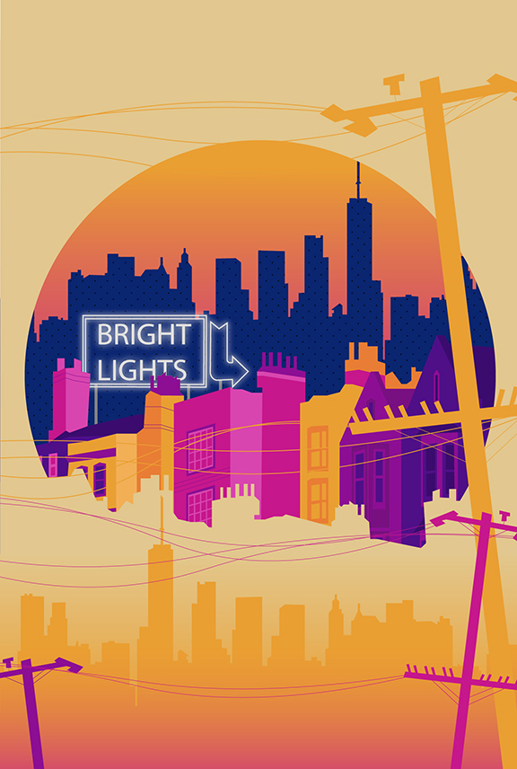

Adobe Illustrator Projects
Vector Composition

Vector composition graphic made by illustrating royalty free photos with different techniques.
Techniques used: 2D illustration, Stroke Only, Gradient, Typography, Shilouette
BEHIND THE SCENES STEPS:
-layout assets in Adobe Photoshop and plan use of techniques.
- choose bright colour pallette.
- vector trace shapes and add in details.
- add final touches: pattern background, gaussian blur, gradients.